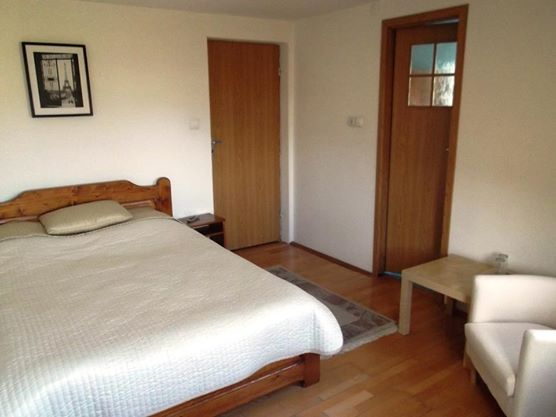
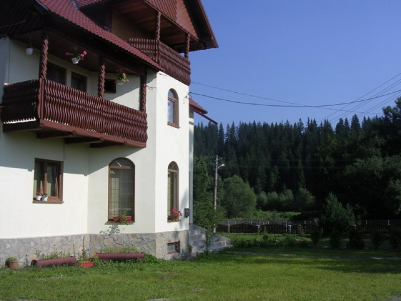
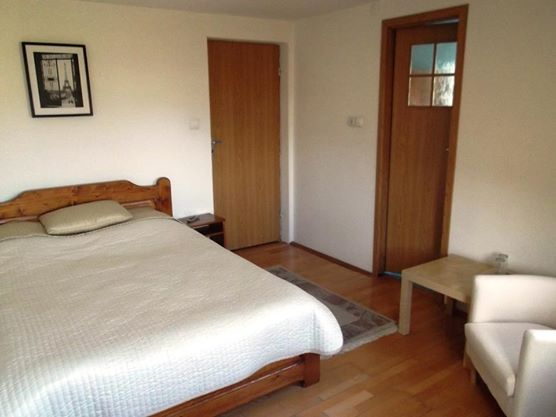
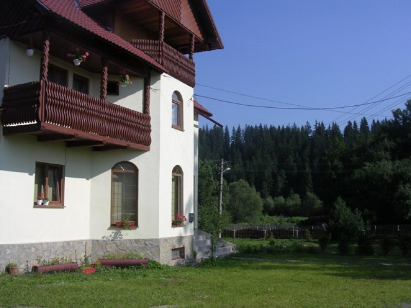

Cazare in Pensiunea Oltea, Campulung Moldovenesc
Intimitate, liniste, confort, aer de munte si proximitate fata de cele mai vestite manastiri ale Bucovinei.
Pensiunea dispune de 10 camere duble, fiecare camera dispune de baie prorie cu cabina de dus, incalzire centrala, cablu TV, televizior, conexiune la internet(wifi), balcon si aer conditionat.Living extrem de spatios si bucatarie complet utilata care sunt puse la dispozitia dumneavoastra. In exterior pensiunea dispune de parcare proprie, gratar, gradina si o terasa, toate acestea intr-o curte foarte spatioasa.
 




Pensiunea Oltea poate constitui locul ideal unde tu si familia ta, grupul tau de prieteni, va puteti odihni sau organiza vizite la cele mai frumoase manastiri ale Bucovinei.
Unele dintre multe alte obiective turistice pe care le puteti vizita, in bucovina:
Manastirea Sucevita || Manastirea Moldovita || Manastirea Putna